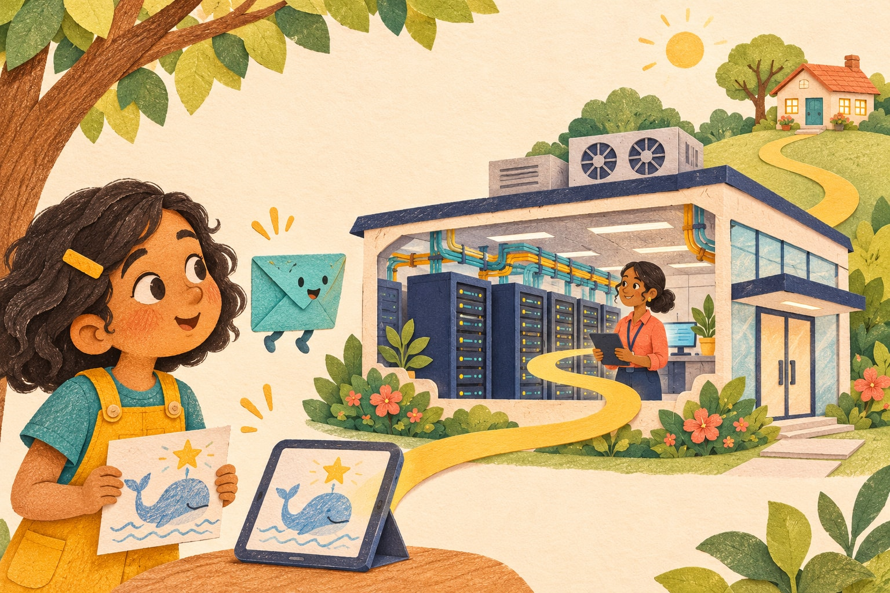
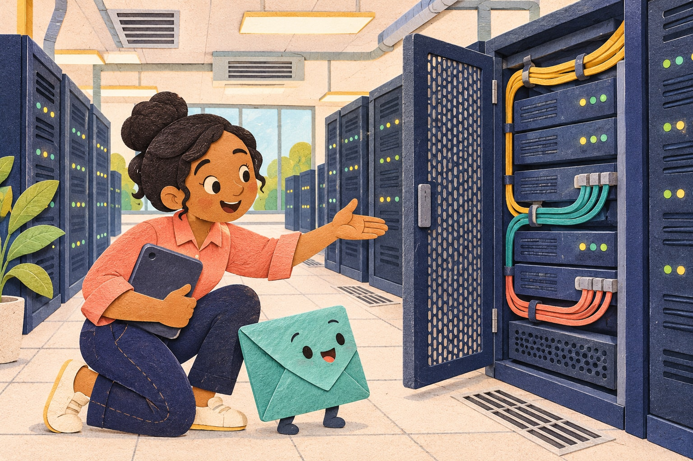
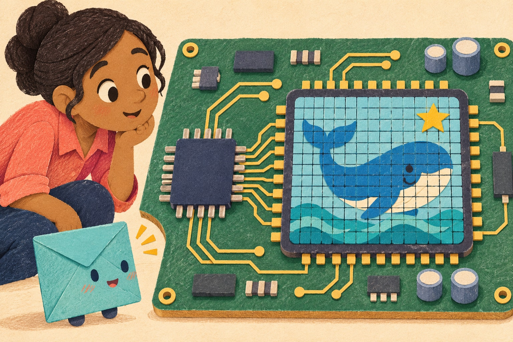
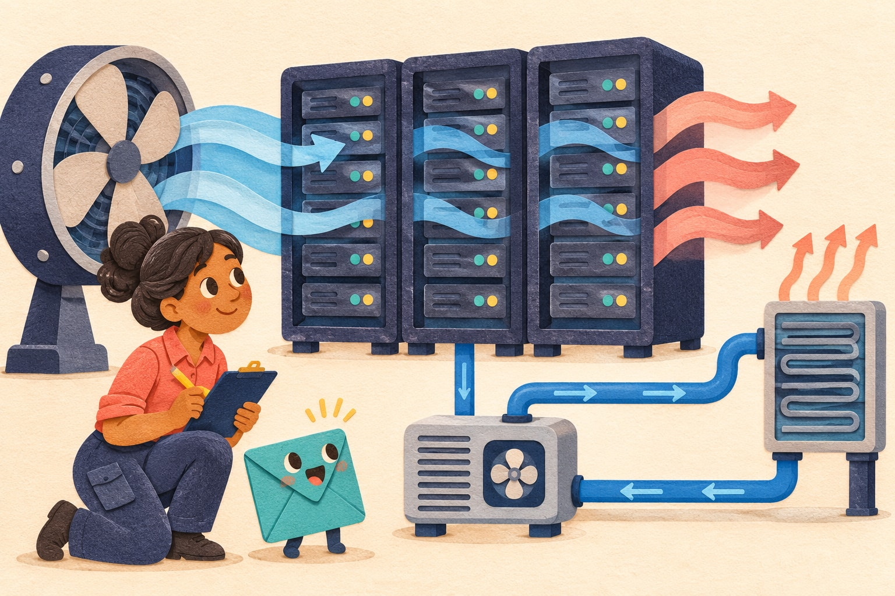
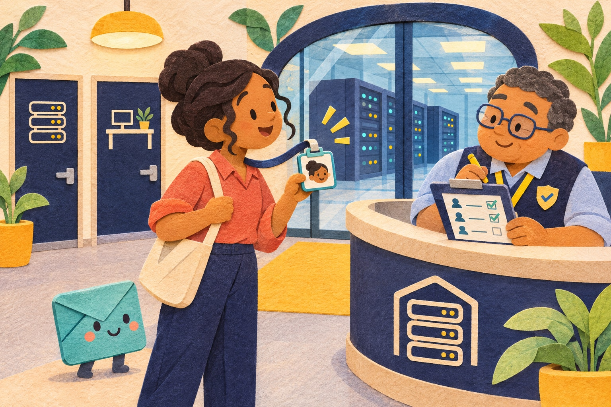
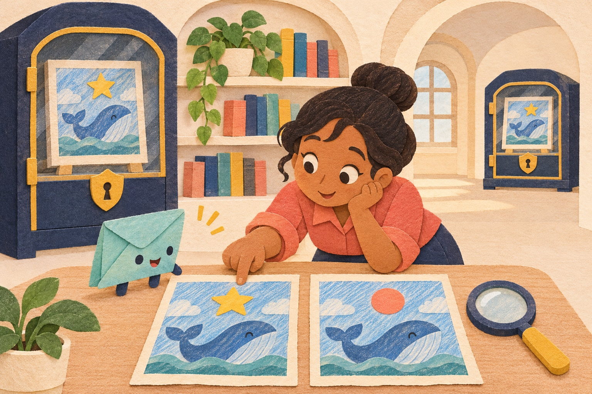
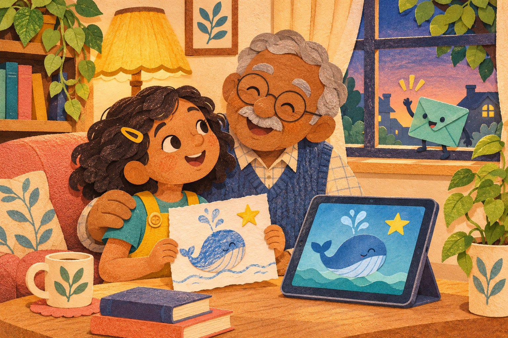

Where Does My Picture Go?
Maya and Pip explore data centers and keeping data safe.
A read-together book for ages 5–7.
Open the book
Maya and Pip explore data centers and keeping data safe.
A read-together book for ages 5–7.
Open the book1 · A picture takes a trip
Maya draws a whale and one bright star.
With Aunt Rae, she sends a copy to Grandpa.
“Where does my picture go?” asks Maya.
What picture would you like to send?
1 · A picture takes a trip
“Let’s imagine the trip,” says Rae.
Pop! Here is Pip, our pretend guide.
“Your picture is data,” says Pip. “Data means information a computer can use.”
Pictures, songs, and words can all be data. Can you name one more?
1 · A picture takes a trip
The picture travels in small pieces called packets.
They zip along network links.
At the other end, the pieces fit back together. Hello again, whale!
Count three pretend packets. Help them arrive.
Trace three paths in the picture with your finger. Packets are pieces of data, not paper envelopes.
1 · A picture takes a trip
“Is my picture in the sky?” asks Maya.
“No,” says Rae. “Cloud services use real computers.”
Some live in buildings called data centers. Let’s peek inside!
Point to the building that holds the computers.

2 · Inside the busy building
Hum, hum, hum.
Rows of computers work here. Many are called servers.
Some keep files. Some run apps. Some send the things we ask for.
The tall frames are called racks. Can you find one?

2 · Inside the busy building
Next door, a computer makes a moving picture.
Its GPU chip does many small, similar jobs at once.
“Like a team filling lots of little squares!” says Maya.
Say the letters: G, P, U. Let’s light up the squares.
Point to several squares at the same time with both hands. A GPU works on many similar calculations together.
2 · Inside the busy building
GPUs can help AI tools learn patterns from examples.
An AI tool might help find whales in pictures.
“It can get things wrong,” says Rae. “People must check.”
Could a cloud in a photo look like a whale?
2 · Inside the busy building
Rae checks little clues called measurements.
How busy is the GPU? How warm? How much power is it using?
Is there room in its working memory?
Explore the four things Rae checks.
Say these four clues together: busy, heat, power, room. A busy computer may be doing exactly the right job.

2 · Inside the busy building
Beep! One computer is warmer than usual.
“Is someone being bad?” asks Pip.
“Not necessarily,” says Rae. “Let’s check its work and its cooling.”
When something is different, we look for clues before we decide.
2 · Inside the busy building
Rae finds a fan that needs fixing.
Fans move air to carry heat away. Some systems use liquid in special pipes.
The team fixes the fan. Whoosh!
Help the pretend cooling team.
Follow the blue air with your finger. Then follow the warm air out. Only trained grown-ups fix this equipment.
2 · Inside the busy building
Computers need electricity.
Backup batteries can help when power stops. Other power systems help too.
“We also try to waste less energy,” says Rae. “Our planet matters.”
What else in your home uses electricity?

3 · Keeping the picture safe
At the real building, workers check badges and permissions.
Visitors need help from a guide.
“Knowing who you are matters,” says Rae. “So does knowing where you may go.”
A badge is one check. It does not open every door.
3 · Keeping the picture safe
Files have permissions too.
Maya lets Grandpa see her picture.
That does not mean he may change it. People get just the access they need.
Grandpa has permission to look. What may he do?
Circle the allowed action: LOOK AT THE PICTURE / CHANGE THE PICTURE. Explain your choice.

3 · Keeping the picture safe
Encryption changes data so it is hard to read without the right digital key.
“Like a locked box?” asks Maya.
“That helps us imagine it,” says Rae.
Open and close our pretend picture box.
Make a box shape with your hands. Real encryption uses math, not a little metal lock.
3 · Keeping the picture safe
Computers talk along network paths.
Rules help decide which computers may talk to which.
One open path does not mean every room is open.
Imagine a school: a library pass does not unlock every cupboard.
3 · Keeping the picture safe
A computer sends many messages.
Beep! A tool spots a different pattern.
“A clue!” says Rae. “It might be a busy job, a mistake, or something unsafe.”
What should Rae do first?
Choose: CHECK THE CLUES / DECIDE IT IS BAD AT ONCE. Why?
3 · Keeping the picture safe
Rae checks the job list and the computer’s notes, called logs.
This time, an approved job is sending the messages.
“Busy can be okay,” says Pip.
Tell someone why a beep does not always mean danger.
3 · Keeping the picture safe
Next, a different request asks to open a private file.
It has no permission. The system says no.
The security team checks what happened and keeps a record.
People and tools work together. No one lock does every job.
3 · Keeping the picture safe
Now Pip spots a problem.
In one saved copy, Maya’s star has become a circle!
Was it a mistake? An unwanted change? The team needs more clues.
Find the part of the picture that changed.
Point to the star and the circle. A change tells us to check; it does not tell us who made it.
3 · Keeping the picture safe
Computers can check files against a trusted record.
A check can show that something changed.
“It cannot tell us the whole story,” says Rae. “We still investigate.”
Keeping data from unwanted changes is called integrity. That is a big word for an important job!
3 · Keeping the picture safe
Good news! The team kept a backup.
A backup is an extra copy stored safely, apart from the first.
They check it before using it.
Find the extra copy in the other cabinet.
3 · Keeping the picture safe
The team brings back the checked copy.
There is Maya’s star!
They also look for what caused the change, so they can help stop it happening again.
Bring back the picture from our pretend backup.
Draw a star in the air. Restoring a copy helps us recover; finding the cause is another job.

4 · Home again
Later, Maya visits Grandpa. Her picture is on his screen.
“It took a whole team!” says Maya.
Grandpa gives her a whale-sized hug. Pip waves. What a trip!
The end. What helped the picture get there safely?
Your turn
If a message feels odd, pause and ask a trusted grown-up.
Ask before sharing a photo or private information.
If you clicked by mistake, tell someone. You can get help.
A pop-up asks for your home address. What do you do?
Name a trusted grown-up you could ask. You never have to solve a scary online problem alone.
Little word garden
Say a word. Point to something in the story that matches it.
Play together · 1
Put these story stops in order.
Start with Maya. Finish with Grandpa.
Tell the story in your own words.
Tap each stop in the order it belongs.
Write 1, 2, 3 beside these stops: GRANDPA’S SCREEN __ / MAYA’S TABLET __ / DATA CENTER __. Draw a line to join them.
Play together · 2
Pretend you care for the picture.
Grandpa may look. Rae may check the backup.
Someone else asks to erase it. They have no permission.
Which request should stay closed?
Circle the request to refuse: GRANDPA LOOKS / RAE CHECKS / SOMEONE ERASES WITHOUT PERMISSION.
Play together · 3
On paper, draw a picture you would like to send.
Add a path, a computer, a cooling fan, and a safe backup.
Tell a grown-up what each part does.
What will your picture be?
Use the space below. Your picture does not need your name, address, or any private information.
For grown-ups
Read a few pages at a time. Invite pointing, sounds, and questions. Ages 5–7 do not need to memorize the technical words. The printable activities work without a device.
Pip, the journey, and its problems are fictional. Envelopes, cabinets, locks, and colored tiles are visual metaphors. Packets are data; GPUs do calculations. Not every photo transfer needs a GPU or visits the same kinds of systems.
The activities are pretend examples, not live monitoring, encryption, or access control. They run in the browser and do not ask for personal information. Read-aloud uses a device/browser voice if available; voice processing depends on that provider.
Busy GPUs and unusual traffic do not prove an attack. A changed cryptographic hash indicates a mismatch with a trusted reference; it does not identify the person, intent, or correctness of the original file. Backups must be protected and tested.
Children can pause and ask for help. Adults handle accounts, updates, strong credentials, and extra sign-in checks. Privacy, permission, integrity, and recovery all matter. No single tool guarantees safety.
For grown-ups · Sources
The story simplifies these primary references. Read together with an adult. Sources checked November 5, 2026.
Servers, storage, networks, cooling, power, and cloud infrastructure; pages 5–6 and 10–12.
https://aws.amazon.com/what-is/data-center/Many similar calculations in parallel; pages 7–8. The colored tiles are a teaching metaphor.
https://blogs.nvidia.com/blog/whats-the-difference-between-a-cpu-and-a-gpu/GPU monitoring and measurements; page 9. Our activities do not read real GPU measurements.
https://docs.nvidia.com/datacenter/cloud-native/gpu-telemetry/latest/dcgm-exporter.htmlPhysical access, permissions, logging, and layers of protection; pages 13–14 and 19.
https://aws.amazon.com/trust-center/data-center/our-controls/For grown-ups · Sources
Use these references for the details behind our simple explanations. The story describes general ideas, not a deployed cloud system.
Transforming readable data using cryptography; page 15. A screen cover is not real encryption.
https://csrc.nist.gov/glossary/term/encryptionHash functions and change detection; pages 20–21. Reference values also need protection.
https://csrc.nist.gov/glossary/term/cryptographic_hash_functionSeparate safe copies and restoring files; pages 22–23.
https://www.ncsc.gov.uk/collection/top-tips-for-staying-secure-online/always-back-up-your-most-important-dataUnexpected requests and checking before responding; page 25. An adult should help young children.
https://consumer.ftc.gov/articles/how-recognize-avoid-phishing-scams